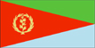
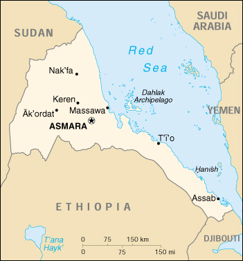

|
Eritrea |  |
| Introduction Geography People Government Economy Communications Transportation Military Transnational Issues | ||
|  | ||
| Eritrea | Introduction | Top of Page |
| Background: | Eritrea was awarded to Ethiopia in 1952 as part of a federation. Ethiopia's annexation of Eritrea as a province 10 years later sparked a 30-year struggle for independence that ended in 1991 with Eritrean rebels defeating governmental forces; independence was overwhelmingly approved in a 1993 referendum. A two and a half year border war with Ethiopia that erupted in 1998 ended under UN auspices on 12 December 2000. |
| Eritrea | Geography | Top of Page |
| Location: | Eastern Africa, bordering the Red Sea, between Djibouti and Sudan |
| Geographic coordinates: | 15 00 N, 39 00 E |
| Map references: | Africa |
| Area: |
total:
121,320 sq km
land: 121,320 sq km water: 0 sq km |
| Area - comparative: | slightly larger than Pennsylvania |
| Land boundaries: |
total:
1,630 km
border countries: Djibouti 113 km, Ethiopia 912 km, Sudan 605 km |
| Coastline: | 2,234 km total; mainland on Red Sea 1,151 km, islands in Red Sea 1,083 km |
| Maritime claims: | territorial sea: 12 NM |
| Climate: | hot, dry desert strip along Red Sea coast; cooler and wetter in the central highlands (up to 61 cm of rainfall annually); semiarid in western hills and lowlands; rainfall heaviest during June-September except in coastal desert |
| Terrain: | dominated by extension of Ethiopian north-south trending highlands, descending on the east to a coastal desert plain, on the northwest to hilly terrain and on the southwest to flat-to-rolling plains |
| Elevation extremes: |
lowest point:
near Kulul within the Denakil depression -75 m
highest point: Soira 3,018 m |
| Natural resources: | gold, potash, zinc, copper, salt, possibly oil and natural gas, fish |
| Land use: |
arable land:
12%
permanent crops: 1% permanent pastures: 49% forests and woodland: 6% other: 32% (1998 est.) |
| Irrigated land: | 280 sq km (1993 est.) |
| Natural hazards: | frequent droughts; locust swarms |
| Environment - current issues: | deforestation; desertification; soil erosion; overgrazing; loss of infrastructure from civil warfare |
| Environment - international agreements: |
party to:
Biodiversity, Climate Change, Desertification, Endangered Species
signed, but not ratified: none of the selected agreements |
| Geography - note: | strategic geopolitical position along world's busiest shipping lanes; Eritrea retained the entire coastline of Ethiopia along the Red Sea upon de jure independence from Ethiopia on 24 May 1993 |
| Eritrea | People | Top of Page |
| Population: | 4,298,269 (July 2001 est.) |
| Age structure: |
0-14 years:
42.85% (male 922,691; female 918,916)
15-64 years: 53.87% (male 1,147,927; female 1,167,705) 65 years and over: 3.28% (male 71,232; female 69,798) (2001 est.) |
| Population growth rate: | 3.84% (2001 est.) |
| Birth rate: | 42.52 births/1,000 population (2001 est.) |
| Death rate: | 12.07 deaths/1,000 population (2001 est.) |
| Net migration rate: |
7.91 migrant(s)/1,000 population (2001 est.)
note: according to the UNHCR, about 150,000 Eritrean refugees in Sudan have registered for voluntary repatriation, following the restoration of diplomatic relations between Eritrea and Sudan in January 2000 |
| Sex ratio: |
at birth:
1.03 male(s)/female
under 15 years: 1 male(s)/female 15-64 years: 0.98 male(s)/female 65 years and over: 1.02 male(s)/female total population: 0.99 male(s)/female (2001 est.) |
| Infant mortality rate: | 75.14 deaths/1,000 live births (2001 est.) |
| Life expectancy at birth: |
total population:
56.18 years
male: 53.73 years female: 58.71 years (2001 est.) |
| Total fertility rate: | 5.87 children born/woman (2001 est.) |
| HIV/AIDS - adult prevalence rate: | 2.87% (1999 est.) |
| HIV/AIDS - people living with HIV/AIDS: | NA |
| HIV/AIDS - deaths: | NA |
| Nationality: |
noun:
Eritrean(s)
adjective: Eritrean |
| Ethnic groups: | ethnic Tigrinya 50%, Tigre and Kunama 40%, Afar 4%, Saho (Red Sea coast dwellers) 3% |
| Religions: | Muslim, Coptic Christian, Roman Catholic, Protestant |
| Languages: | Afar, Amharic, Arabic, Tigre and Kunama, Tigrinya, other Cushitic languages |
| Literacy: |
definition:
NA
total population: 25% male: NA% female: NA% |
| Eritrea | Government | Top of Page |
| Country name: |
conventional long form:
State of Eritrea
conventional short form: Eritrea local long form: Hagere Ertra local short form: Ertra former: Eritrea Autonomous Region in Ethiopia |
| Government type: |
transitional government
note: following a successful referendum on independence for the Autonomous Region of Eritrea on 23-25 April 1993, a National Assembly, composed entirely of the People's Front for Democracy and Justice or PFDJ, was established as a transitional legislature; a Constitutional Commission was also established to draft a constitution; ISAIAS Afworki was elected president by the transitional legislature; the constitution, ratified in May 1997, did not enter into effect, pending parliamentary and presidential elections; parliamentary elections have now been scheduled to take place in December 2001 |
| Capital: | Asmara (formerly Asmera) |
| Administrative divisions: |
8 provinces (singular - awraja); Akale Guzay, Barka, Denkel, Hamasen, Sahil, Semhar, Senhit, Seraye
note: in May 1995 the National Assembly adopted a resolution stating that the administrative structure of Eritrea, which had been established by former colonial powers, would consist of only six provinces when the new constitution, then being drafted, became effective in 1997; the new provinces, the names of which had not been recommended by the US Board on Geographic Names for recognition by the US Government, pending acceptable definition of the boundaries, were: Anseba, Debub, Debubawi Keyih Bahri, Gash-Barka, Maakel, and Semanawi Keyih Bahri; more recently, it has been reported that these provinces have been redesignated regions and renamed Southern Red Sea, Northern Red Sea, Anseba, Gash-Barka, Southern, and Central |
| Independence: | 24 May 1993 (from Ethiopia) |
| National holiday: | Independence Day, 24 May (1993) |
| Constitution: | the transitional constitution, decreed on 19 May 1993, was replaced by a new constitution adopted on 23 May 1997, but not yet implemented |
| Legal system: | operates on the basis of transitional laws that incorporate pre-independence statutes of the Eritrean People's Liberation Front, revised Ethiopian laws, customary laws, and post independence enacted laws |
| Suffrage: | 18 years of age; universal |
| Executive branch: |
chief of state:
President ISAIAS Afworki (since 8 June 1993); note - the president is both the chief of state and head of government and is head of the State Council and National Assembly
head of government: President ISAIAS Afworki (since 8 June 1993); note - the president is both the chief of state and head of government and is head of the State Council and National Assembly cabinet: State Council is the collective executive authority elections: president elected by the National Assembly; election last held 8 June 1993 (next tentatively scheduled for December 2001) election results: ISAIAS Afworki elected president; percent of National Assembly vote - ISAIAS Afworki 95% |
| Legislative branch: |
unicameral National Assembly (150 seats; term limits not established)
elections: in May 1997, following the adoption of the new constitution, 75 members of the PFDJ Central Committee (the old Central Committee of the EPLF), 60 members of the 527-member Constituent Assembly which had been established in 1997 to discuss and ratify the new constitution, and 15 representatives of Eritreans living abroad were formed into a Transitional National Assembly to serve as the country's legislative body until country-wide elections to a National Assembly are held; only 75 members will be elected to the National Assembly - the other 75 will be members of the Central Committee of the PFDJ; parliamentary elections are now scheduled for NA December 2001 |
| Judicial branch: | Supreme Court; 10 provincial courts; 29 district courts |
| Political parties and leaders: | People's Front for Democracy and Justice or PFDJ, the only party recognized by the government [ISAIAS Afworki, PETROS Solomon]; note - the National Assembly has appointed a committee to draft a law on political parties |
| Political pressure groups and leaders: | Eritrean Islamic Jihad or EIJ; Eritrean Liberation Front or ELF [ABDULLAH Muhammed]; Eritrean Liberation Front-Revolutionary Council or ELF-RC [Ahmed NASSER]; Eritrean Liberation Front-United Organization or ELF-UO [Mohammed Said NAWD] |
| International organization participation: | ACP, AfDB, CCC, ECA, FAO, IBRD, ICAO, ICFTU, IDA, IFAD, IFC, IGAD, ILO, IMF, IMO, Intelsat (nonsignatory user), Interpol, IOC, ITU, NAM, OAU, OPCW, UN, UNCTAD, UNESCO, UNIDO, UPU, WFTU, WHO, WIPO, WMO, WToO |
| Diplomatic representation in the US: |
chief of mission:
Ambassador GIRMA Asmerom
chancery: 1708 New Hampshire Avenue NW, Washington, DC 20009 telephone: [1] (202) 319-1991 FAX: [1] (202) 319-1304 |
| Diplomatic representation from the US: |
chief of mission:
Ambassador William D. CLARKE
embassy: Franklin D. Roosevelt Street, Asmara mailing address: P. O. Box 211, Asmara telephone: [291] (1) 120004 FAX: [291] (1) 127584 |
| Flag description: | red isosceles triangle (based on the hoist side) dividing the flag into two right triangles; the upper triangle is green, the lower one is blue; a gold wreath encircling a gold olive branch is centered on the hoist side of the red triangle |
| Eritrea | Economy | Top of Page |
| Economy - overview: | With independence from Ethiopia on 24 May 1993, Eritrea faced the economic problems of a small, desperately poor country. The economy is largely based on subsistence agriculture, with 80% of the population involved in farming and herding. The small industrial sector consists mainly of light industries with outmoded technologies. Domestic output (GDP) is substantially augmented by worker remittances from abroad. Government revenues come from custom duties and taxes on income and sales. Road construction is a top domestic priority. In the long term, Eritrea may benefit from the development of offshore oil, offshore fishing, and tourism. Eritrea's economic future depends on its ability to master fundamental social and economic problems, e.g., by reducing illiteracy, promoting job creation, expanding technical training, attracting foreign investment, and streamlining the bureaucracy. Eritrea's agriculture over the last two years was severely weakened by war and drought, and many farmlands must wait to be demined. Another major difficulty is the ports, which prior to the war were Ethiopia's preferred outlets but since have seen trade dry up. |
| GDP: | purchasing power parity - $2.9 billion (2000 est.) |
| GDP - real growth rate: | -1% (2000 est.) |
| GDP - per capita: | purchasing power parity - $710 (2000 est.) |
| GDP - composition by sector: |
agriculture:
16%
industry: 27% services: 57% (2000 est.) |
| Population below poverty line: | NA% |
| Household income or consumption by percentage share: |
lowest 10%:
NA%
highest 10%: NA% |
| Inflation rate (consumer prices): | 14% (2000 est.) |
| Labor force: | NA |
| Labor force - by occupation: | agriculture 80%, industry and services 20% |
| Unemployment rate: | NA% |
| Budget: |
revenues:
$283.9 million
expenditures: $351.6 million, including capital expenditures of $NA (1997 est.) |
| Industries: | food processing, beverages, clothing and textiles |
| Industrial production growth rate: | NA% |
| Electricity - production: | 165 million kWh (1999) |
| Electricity - production by source: |
fossil fuel:
100%
hydro: 0% nuclear: 0% other: 0% (1999) |
| Electricity - consumption: | 153.5 million kWh (1999) |
| Electricity - exports: | 0 kWh NA kWh (1999) |
| Electricity - imports: | 0 kWh NA kWh (1999) |
| Agriculture - products: | sorghum, lentils, vegetables, corn, cotton, tobacco, coffee, sisal; livestock, goats; fish |
| Exports: | $26 million (f.o.b., 1999) |
| Exports - commodities: | livestock, sorghum, textiles, food, small manufactures |
| Exports - partners: | Sudan 27.2%, Ethiopia 26.5%, Japan 13.2%, UAE 7.3%, Italy 5.3% (1998) |
| Imports: | $560 million (c.i.f., 1999) |
| Imports - commodities: | machinery, petroleum products, food, manufactured goods |
| Imports - partners: | Italy 17.4%, UAE 16.2%, Germany 5.7%, UK 4.5%, Korea 4.4% (1998) |
| Debt - external: | $281 million (2000 est.) |
| Economic aid - recipient: | $77 million (1999) |
| Currency: | nakfa (ERN) |
| Currency code: | ERN |
| Exchange rates: | nakfa per US dollar = 9.5 (January 2000), 7.6 (January 1999), 7.2 (March 1998 est.) |
| Fiscal year: | calendar year |
| Eritrea | Communications | Top of Page |
| Telephones - main lines in use: | 23,578 (2000) |
| Telephones - mobile cellular: | NA |
| Telephone system: |
general assessment:
NA
domestic: very inadequate; most telephones are in Asmara; government is seeking international tenders to improve the system international: NA |
| Radio broadcast stations: | AM 2, FM 1, shortwave 2 (2000) |
| Radios: | 345,000 (1997) |
| Television broadcast stations: | 1 (2000) |
| Televisions: | 1,000 (1997) |
| Internet country code: | .er |
| Internet Service Providers (ISPs): | 4 (2000) |
| Internet users: | 500 (2000) |
| Eritrea | Transportation | Top of Page |
| Railways: |
total:
317 km
narrow gauge: 317 km 0.950-m gauge (1999) note: links Ak'ordat and Asmara with the port of Massawa; nonoperational since 1978 except for about a 5 km stretch that was reopened in Massawa in 1994; rehabilitation of the remainder and of the rolling stock is under way |
| Highways: |
total:
3,850 km
paved: 810 km unpaved: 3,040 km (2000) |
| Waterways: | none |
| Ports and harbors: | Assab (Aseb), Massawa (Mits'iwa) |
| Merchant marine: |
total:
5 ships (1,000 GRT or over) totaling 16,069 GRT/19,549 DWT
ships by type: bulk 1, cargo 1, liquefied gas 1, petroleum tanker 1, roll on/roll off 1 (2000 est.) |
| Airports: | 20 (2000 est.) |
| Airports - with paved runways: |
total:
2
over 3,047 m: 1 2,438 to 3,047 m: 1 (2000 est.) |
| Airports - with unpaved runways: |
total:
18
over 3,047 m: 2 2,438 to 3,047 m: 2 1,524 to 2,437 m: 5 914 to 1,523 m: 7 under 914 m: 2 (2000 est.) |
| Eritrea | Military | Top of Page |
| Military branches: | Army, Navy, Air Force |
| Military expenditures - dollar figure: | $160 million (2000 est.) |
| Military expenditures - percent of GDP: | 29.4% (2000 est.) |
| Eritrea | Transnational Issues | Top of Page |
| Disputes - international: | as a result of the 12 December 2000 peace agreement ending a two-year war with Ethiopia, the UN will administer a 25-km wide temporary security zone within Eritrea until a joint boundary commission delimits and demarcates a final boundary |
{kind=link}
{kind=link}